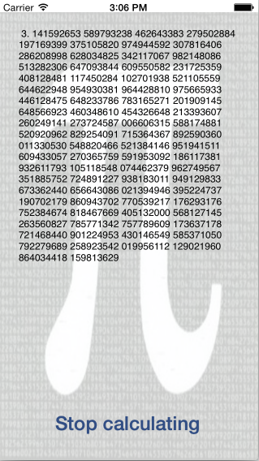

Duration
15 minutes
Goals
The goal of this lab will be to cancel an operation that is executed as a Finite-Length Task, in case the available background time expires. The application we use to demonstrate this will calculate decimals of Pi and looks like this:
This application will begin calculating decimals of Pi when you press the Start Calculating button. It will then continue to run when you background the application because the calculation is wrapped in a Finite-Length Task - just as you created in the first exercise.
Since there are an infinite number of digits in Pi, the application will continue to execute in the background until the maximum available background time has been reached and iOS terminates the application.
Your goal is to fix this behavior by adding cancellation support to the logic using a CancellationToken.
You will introduce two new behaviors into the application with this support:
- Allow the user to stop the ongoing calculation by pressing the button once more.
- Prevent the application from being terminated if it runs out of background time.
Required assets
The provided Part 02 Resources folder contains a sub-folder named Lab.Start with a solution you can should as a starting point. There is also a Lab.Completed folder with the completed code if you want to compare your solution.
Exercise Overview
Use the following high-level steps to complete the exercise. There are step-by-step directions below that which you can refer to if you need a hint or some additional guidance.
-
To allow cancellation of a
System.Threading.Tasks.Task, you can use aCancellationTokenSourceinto the main view controller. -
Inside
HandleCalculatePimethod, aTaskis started that runs the calculation independently of the UI thread. To ensure that the calculation continues when the application is backgrounded, it is wrapped into a Finite-Length Task using the same technique you used in the first exercise. -
Both, the
Taskand the call toPiHelper.CalcPi()accept aCancellationTokenas parameters which you can get from theCancellationTokenSource. -
If new decimals have been calculated, the callback
UpdateUi()will be triggered. In there, add a check if cancellation of the operation has been requested. - With the checks in place you will need to add code to actually cancel the task. This can happen if the user hits the "Stop calculating" button or if the app is backgrounded and runs out of background time.
Steps
Below are the step-by-step instructions to implement the exercise.
Add a CancellationTokenSource
- Open the CancellableTaskViewController.cs source file.
-
Add a new private
CancellationTokenSourcefield into the class and assign it to a new object.
Pass the token around
The CancellationTokenSource is responsible for creating the CancellationToken which we will use to cancel a specific operation - in this case our Pi calculation.
-
Use the
Tokenproperty of theCancellationTokenSourceto retrieve theCancellationToken. -
Pass the
CancellationTokento thePiHelper.CalcPimethod - there is a placeholder being passed in currently. PiHelper is already coded to regularly check if cancellation was requested and stop the calculation. -
You should also pass the token into the
Task.Runcall which creates the task. This is an optimization: if the token is canceled before the task is started, then the runtime will not schedule theTaskand it will be reported as canceled.
Check if cancellation was requested
You might have noticed that we have a try/catch wrapper around the Task.Run call. This is used to catch an OperationCancelledException. This is the exception reported to our code when a task is canceled.
Each time PiHelper.Calc() has calculated new digits, it will trigger a callback to update the UI - this was the first parameter we passed into the method (UpdateUi). Since this method is called periodically by the background thread, we can use it to cancel the operation when cancellation is requested.
We can do this in two different ways.
-
Calling
token.ThrowIfCancellationRequestedwill throw an exception if the token has been signaled and the operation is supposed to be canceled. -
Alternatively, you can throw a
OperationCancelledException- this is actually what the method does under the covers. This is a special exception that is caught by the Task Parallel Framework. In response, it will mark the task as canceled and re-throw the exception when the task result is consumed (e.g.awaitorTask.Result).
Perform the following steps.
-
Locate the
UpdateUimethod in the view controller. -
Use the
CancellationTokenfrom your cancellation token source and call theThrowIfCancellationRequestedmethod at the top of theUpdateUimethod. This will check the token and throw an exception if it needs to be canceled.
User-initiated cancellation
You will need to cancel the task if the user presses the button once more or if the background time is about to expire.
-
Start by calling
Cancelon theCancellationTokenSourcewhen the "Stop Calculating" button is pressed. The handler for this is theHandleCalculatePi()method. -
Because the token could be canceled, we need to reset it each time we start the Pi calculator. Add a call to re-create the
TaskCancellationSourceinto theHandleCalculatePimethod when you are starting a new calculation. - Run the application and try out your new logic to cancel the task by pressing the button.
System-initiated cancellation
The second situation that will lead to cancellation is when the available background time expires. This will invoke an expiration handler which is passed into the iOS UIApplication.BeginBackgroundTask method.
-
Locate the
HandleBackgroundTimeExpiresmethod - this is the callback passed to theUIApplication.BeginBackgroundTaskmethod. It will be called when iOS has expired the background operation. -
Add a call to cancel the task through the
CancellationTokenSource. This should end our operation, and as a result, end the iOS background task. - If you have time, run the application and let it timeout. It should cancel automatically and no longer terminate the application.
Summary
In this exercise you have wrapped an important operation into a Finite-Length Task and added cancellation support.